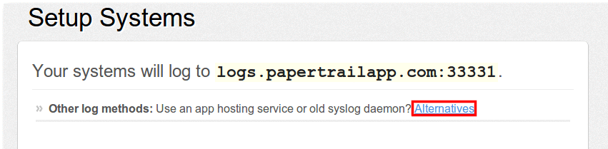
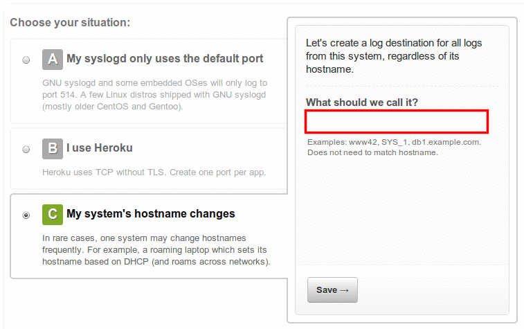
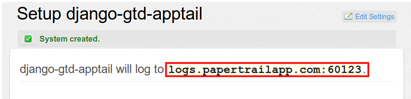
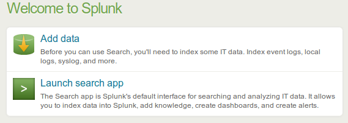
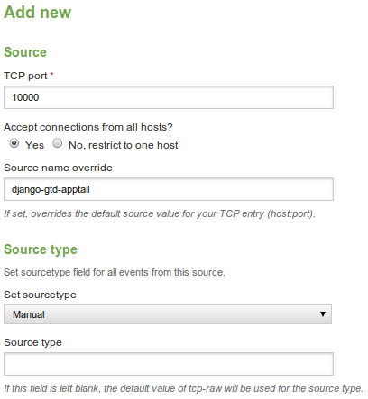

Detailed instructions on how to use drains with third party log analysis software or services.
Note: Do not forward both application and system logs to the same destination.
Papertrail
- Create an account for Papertrail
- In the Dashboard screen, click Add Systems.

- In the Setup Systems screen under Other log methods, click Alternatives.

- Choose option C: My system's hostname changes and give it a suitable name.

- Note down the port number. You need this later on.

- Enable system logging (via udp) by executing the following kato command:
kato log drain add drain-name udp://logs.papertrailapp.com:port#
Note: Papertrail requires systail log lines to have <13>l at the
beginning of each line. Make sure the drain you are forwarding is formatted this way (see
example in Saving Custom Log Formats ).
Splunk
- Set up a Splunk Server.
- In the Welcome screen, click Add data.

- Under Choose a Data Source, click From a TCP port (or UDP)
- In the Add New Source screen:
- Select a TCP/UDP port greater than 9999
- Give it a suitable Source name.
- Set sourcetype to Manual
- Leave Source Type empty

- Enable system logging by executing one of the following kato
commands:
kato log drain add drain-name splunk-server-address:port# kato log drain add drain-name tcp://splunk-server-address:port#
Splunk supports JSON format without further configuration. Enable system JSON logging by executing the following kato command:
kato log drain add --format json drain-name tcp://splunk-server-address:port#
Logstash
- Download and install Logstash.
- Configure Logstash to add a UDP or TCP listener on the port of your choosing. For example, for
a UDP listener on port 10000, add the following to the logstash.conf
file:
input { udp { port => '10000' } } - Enable system logging (via udp) by executing the following kato
command:
kato log drain add *drain-name* udp://logstash-server-address:*port#*
Hello World Custom Drain
The command below starts a drain target server on a node and pipes it to a local file:
nc -lk 0.0.0.0 10000 > log-output.txt
As long as that nc command runs, this will funnel logs from all drains, targeting it into the file log-output.txt
Enable system logging by executing one of the following kato commands:
kato log drain add drain-name udp://server-address:port# kato log drain add drain-name tcp://server-address:port#